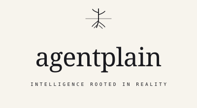
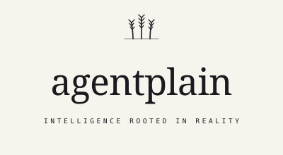
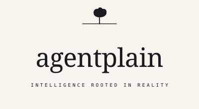
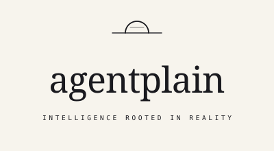
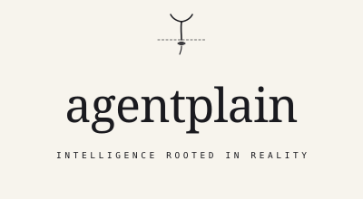
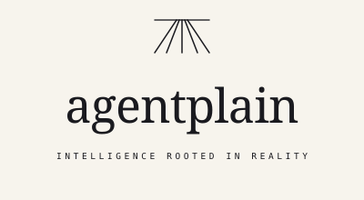

Ten hand-coded SVG candidates for the agentplain mark. All share the same wordmark and tagline; only the tiny pictorial mark above the wordmark varies. The brand is rooted in the plains — prairie, horizon, soil, growth — never aerial. Pick a winner and we’ll wire it in as the canonical logo set (favicon, OG, header).
Brand tokens in use
paper#F7F4ED
paper-deep#EDE9DE
ink#1A1A1F
clay#B65D3A
moss#3F5C3F
mute#8C8478
Current pick
Drop your pick here to compare it in isolation, or paste an SVG file path to preview from disk.
How to use:
Click below each candidate and drag the file onto the drop zone, or click the zone and pick a file. The winner becomes the source for: public/brand/wordmark-light.svg, public/brand/wordmark-inverted.svg, and a mark-only crop for public/favicon.svg.
Ten candidates
Each card shows the hero render (top), small render (~160px wide) and favicon tests:
mark-only at 24px (the realistic favicon), full at 24px (worst-case squash test),
plus a moss/clay colorway preview to check how the mark sits with the brand accent palette.
01Horizon
A single horizontal stroke. Prairie reduced to its purest gesture — the line where land meets sky. Most reductive in the set; reads as a deliberate, confident mark, never as a decorative flourish.
mark · 48 / 24
full · 48 / 24
moss colorway
clay colorway
02Plant with roots
Stem above the soil line, root system descending below. Literal metaphor for “rooted in reality” — the visible plant grows because of what’s beneath. Has stem, two leaves, taproot, and branching roots.

mark · 48 / 24
full · 48 / 24
moss colorway
clay colorway
03Three wheat stalks
Heartland icon. Three stalks with kernel detail along the upper third. Center stalk slightly taller; outer two lean. Detail-heavy — works at hero scale, kernel structure collapses below ~80px.

mark · 48 / 24
full · 48 / 24
moss colorway
clay colorway
04Lone tree
Single tree on a horizon line. Lobed organic canopy (deliberately not a circle — reads as oak, not lollipop). Strong silhouette; survives down to favicon. Carries “rooted, growing, alone but durable” energy.

mark · 48 / 24
full · 48 / 24
moss colorway
clay colorway
05Sunrise
Half-disc rising over horizon. Outlined (not filled) so it reads as sun/light, not silo/dome. Inner chord at half-height suggests the moment of dawn. Cardinal optimism — new day on the prairie.

mark · 48 / 24
full · 48 / 24
moss colorway
clay colorway
06Seedling
Sprout breaking the ground line, two cotyledons unfurling, seed husk and emerging root visible below. Dashed ground line gives soil texture without being literal. The most narrative of the set.

mark · 48 / 24
full · 48 / 24
moss colorway
clay colorway
07Grain silo
Single silo with shallow-dome top and three ribbed metal bands. Wide-not-tall proportions and bands disambiguate from rocket. Heartland industry — agriculture meets infrastructure. Anchored to horizon.
mark · 48 / 24
full · 48 / 24
moss colorway
clay colorway
08Plowed field
Five furrow lines in perspective, converging on the horizon. The work of the land in pure geometry. Confident, structural, and survives small scales because the gesture is geometric, not detail-dependent.

mark · 48 / 24
full · 48 / 24
moss colorway
clay colorway
09Root system
Cross-section: thin soil line at top, the entire mark area is the root system below. The tagline rendered literally. Best at hero scale — at favicon size the secondary hair roots compress.
mark · 48 / 24
full · 48 / 24
moss colorway
clay colorway
10Big sky with cloud
Low horizon, single small cloud upper-left. The negative space IS the sky. Quiet, atmospheric. The cloud is filled (the horizon stroked) which gives the mark visual weight at small sizes.